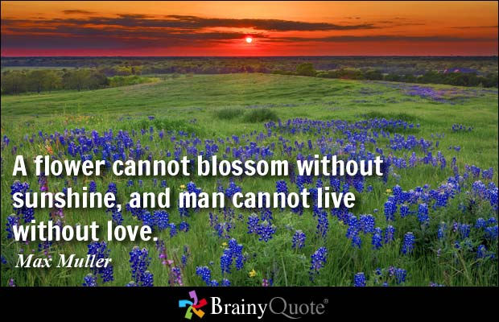

I am Tee Xiu Jing, famous flower blogger in Malaysia.
I'm an avid gardener and a passionate sewer.
I love love love fabrics of all kinds and see beauty everywhere, especially in my garden.
I love to watch things grow and nurture them along with kindness and encouragement.